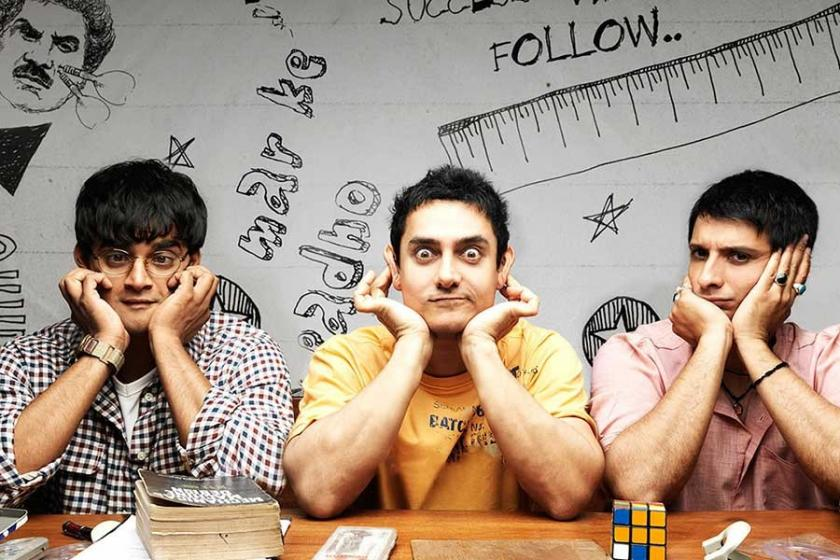

14.07.1992 Sakarya doğumluyum. Sakarya Üniversitesi Bilgisayar Mühendisliği mezunuyum. Evli iki çocuk annesiyim. Ankara'da ikamet etmekteyim.
Aal Izz Well
All Is Well is a 2015 Indian Hindi-language romantic comedy-drama film directed by Umesh Shukla and produced by Bhushan Kumar, Krishan Kumar, Shyam Bajaj and Varun Bajaj and co-produced by Ajay Kapoor. It stars Abhishek Bachchan, Asin Thottumkal, Rishi Kapoor, and Supriya Pathak. The film tackles a thorny issue with a social message similar to Shukla's previous venture OMG – Oh My God!. The official trailer of the film was released on 1 July 2015 on YouTube and os, the film released on 21 August 2015. It marked the first film of Asin after a 2-year-hiatus and the last film appearance of Asin, before her marriage on 23 January 2016 and subsequent retirement from the film industry. The film's title is based on a song from 3 Idiots.